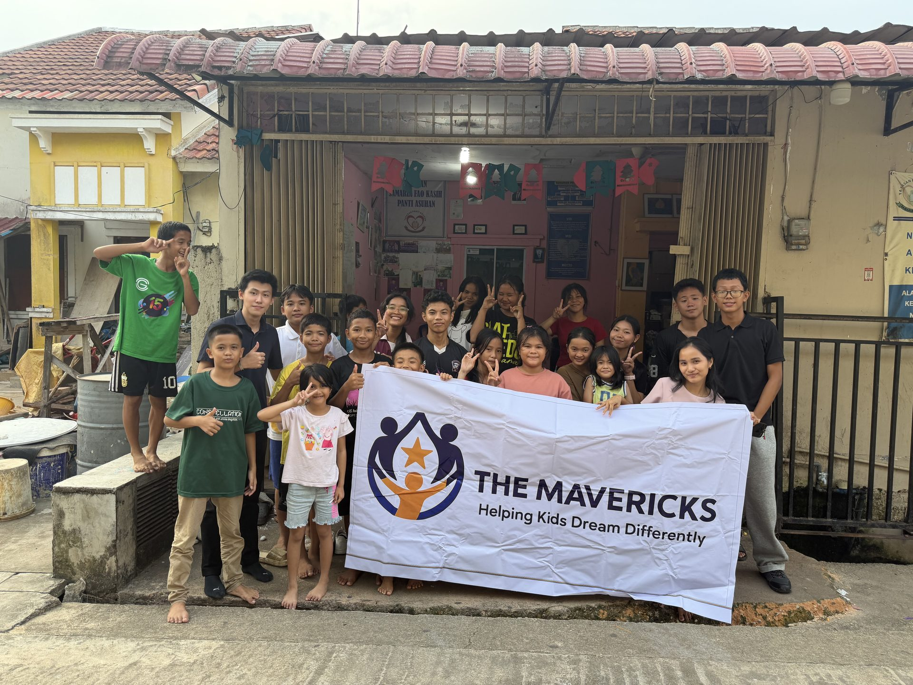
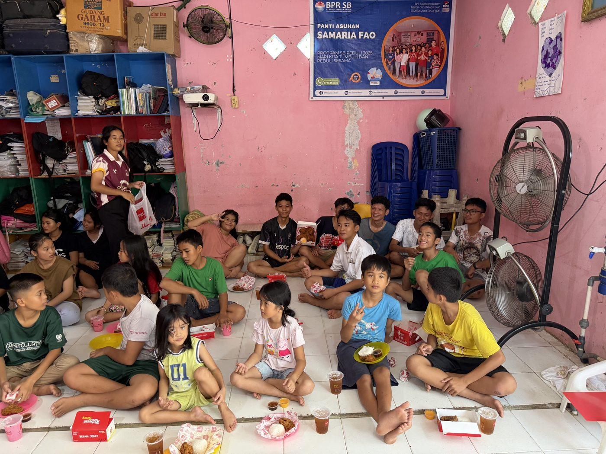
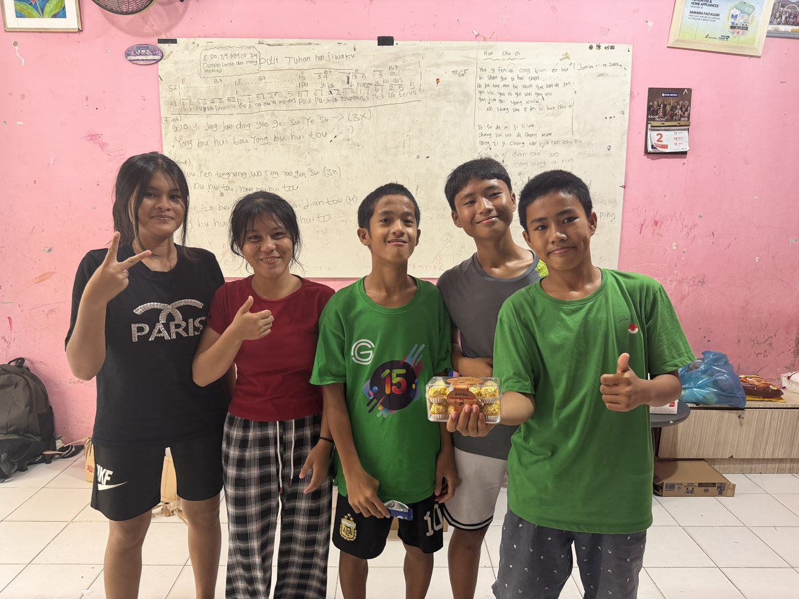
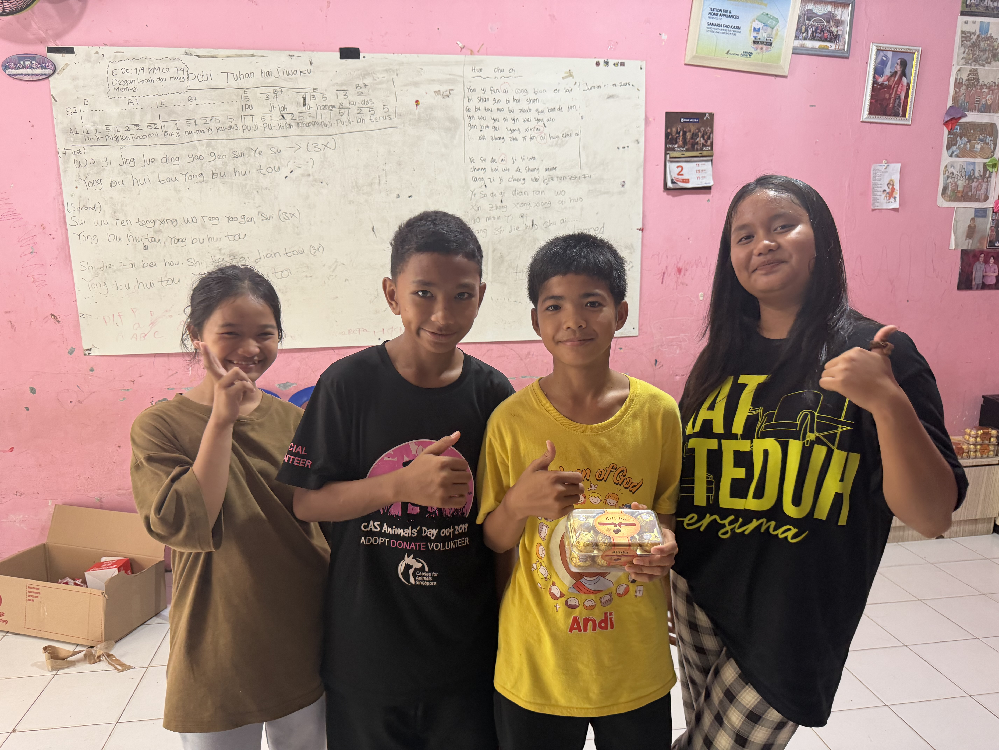
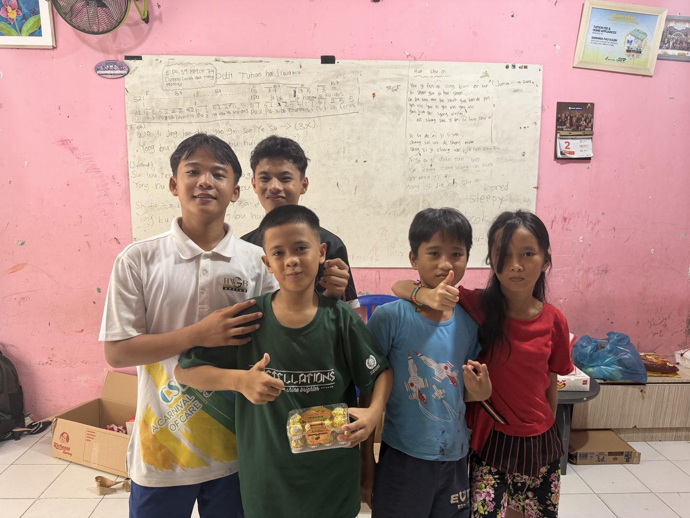
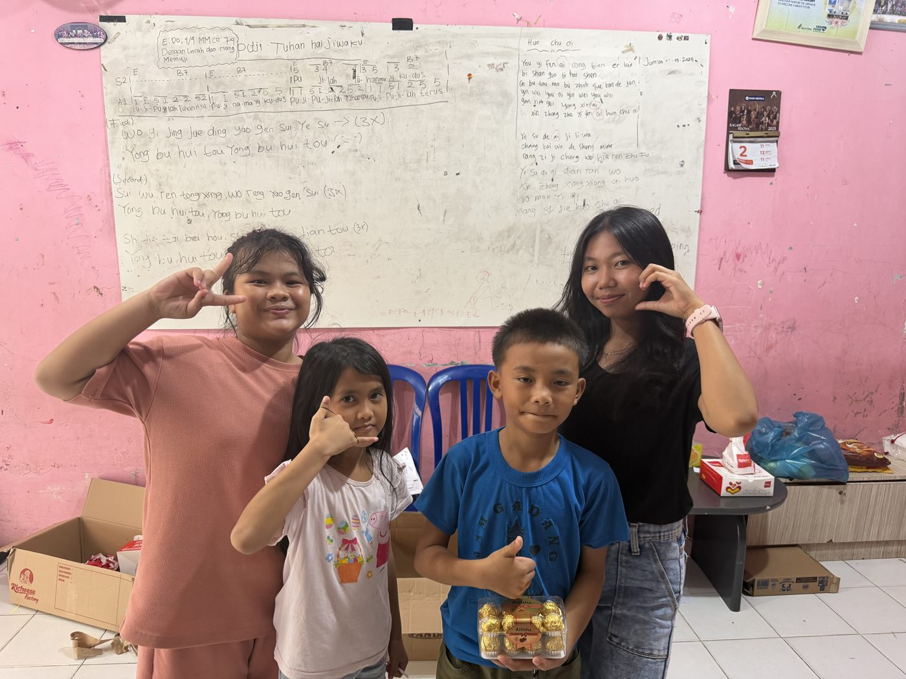
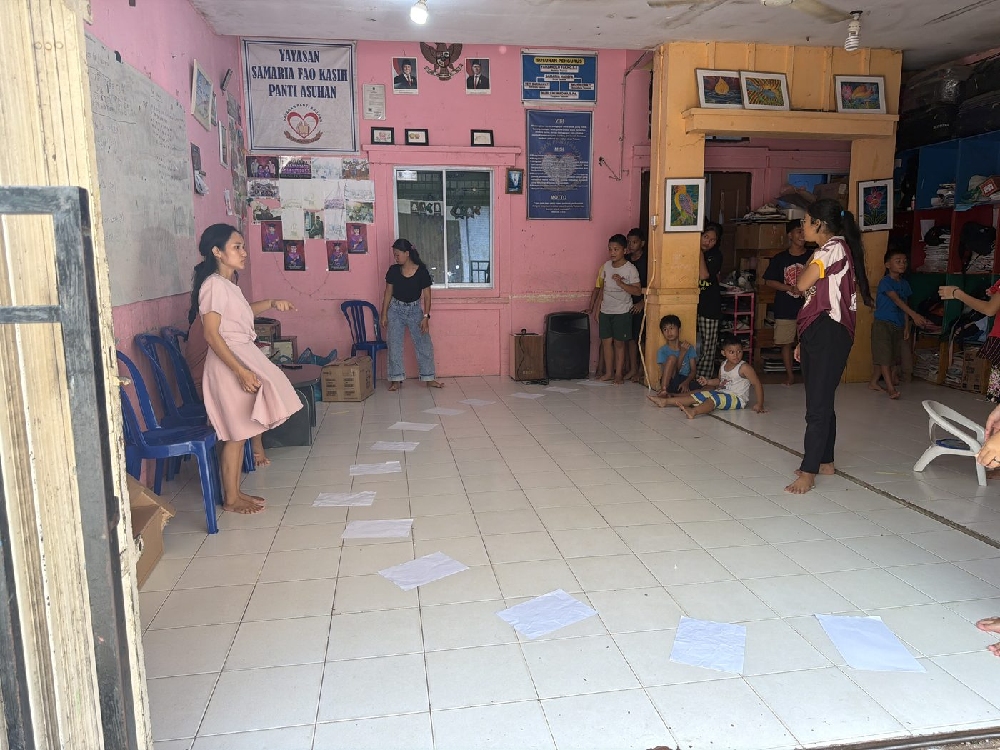
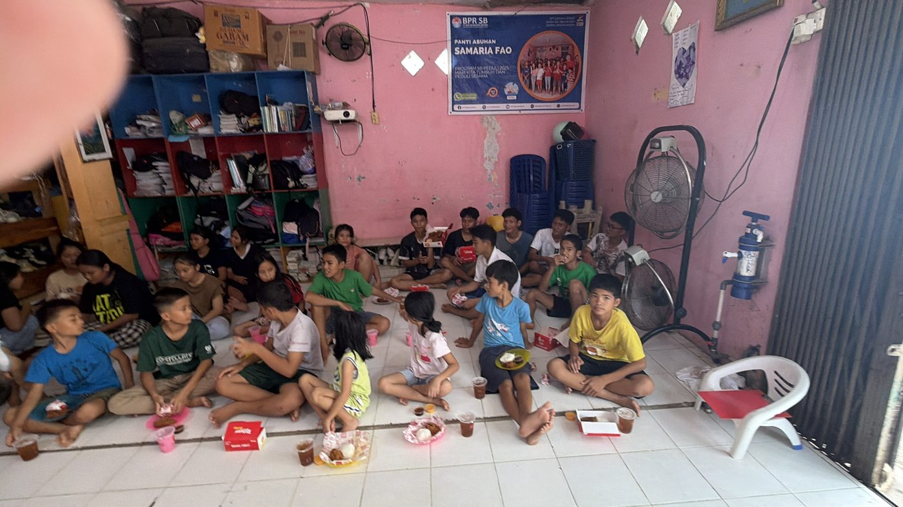
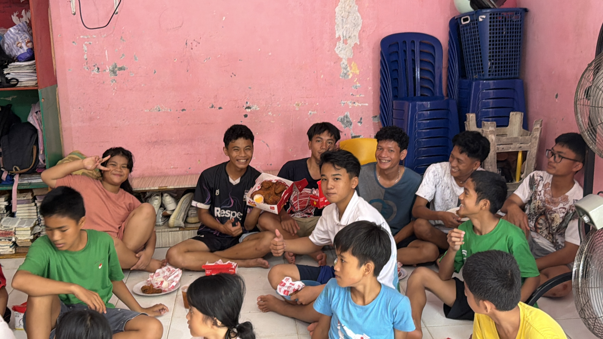

Judul Foto
Deskripsi foto...
The Mavericks. Sebuah gerakan kecil dari Batam untuk menanamkan keberanian: Berani berpikir kritis, berani bermimpi luas, dan berani menjadi berbeda.

Di sudut-sudut panti asuhan Batam, banyak anak tumbuh dengan terbiasa menelan pertanyaan mereka sendiri. Mereka diajarkan untuk bersyukur dan menerima keadaan—namun jarang sekali ada orang dewasa yang duduk di samping mereka, menatap mata mereka, dan bertanya: 'Apa impianmu?' The Mavericks hadir dari sebuah kesadaran mendalam: bantuan sembako dan pakaian bisa habis dalam hitungan hari, tetapi pola pikir yang kritis, rasa percaya diri, dan keberanian bersuara akan melekat seumur hidup. Kami tidak datang membawa rasa kasihan. Kami datang membawa cermin—agar anak-anak ini melihat betapa luar biasanya potensi dalam diri mereka.
Perubahan sejati tidak pernah datang dari paksaan luar. Kami percaya setiap anak harus memiliki dorongan dari dalam diri—keinginan mendalam untuk belajar lebih banyak, berkembang, dan menjadi lebih baik dari hari kemarin.
Membebaskan anak-anak panti asuhan di Batam dari keterbatasan mental dengan membekali mereka berpikir kritis, berani bersuara, dan memecahkan tantangan hidup dengan penuh percaya diri.
Kami tidak mendidik anak-anak untuk pasrah pada keadaan. Kami menyalakan tekad dalam diri mereka untuk bercita-cita tinggi, memperbaiki diri tanpa henti, dan meraih masa depan yang gemilang.
Kurikulum kami dibangun di atas tiga pilar utama untuk membekali anak-anak dengan keterampilan hidup yang jarang ditekankan di sistem sekolah formal.
Kami melatih anak-anak membedakan fakta dan opini, mengenali bias, memecahkan teka-teki logika, dan mengajukan pertanyaan kritis daripada sekadar menerima pernyataan secara mentah.
Membuka jendela ke budaya dunia, sains, filsafat, dan berbagai perspektif agar anak-anak menyadari bahwa latar belakang mereka tidak membatasi impian mereka.
Membangun ketangguhan mental untuk berbicara di depan umum, mempertahankan nilai-nilai pribadi, menerima kegagalan sebagai proses belajar, dan menyambut tantangan baru.
Sejauh ini, kami telah melangkah ke dua panti asuhan di Batam. Bukan dengan ceramah panjang, melainkan permainan, teka-teki logika, dan kebebasan berekspresi.








Coba salah satu studi kasus logika & berpikir kritis yang kami berikan kepada siswa di Batam. Pilih bagaimana Kamu menyelesaikan dilema ini:
"Sebelum The Mavericks datang, anak-anak cenderung pemalu dan sekadar menurut. Sekarang, saat kunjungan akhir pekan, mereka berani mengacungkan tangan, berdebat secara santun, dan bertanya 'Mengapa?' tentang banyak hal. Ini adalah transformasi yang membahagiakan."
"Dulu saya berpikir pendapat saya tidak penting karena saya tumbuh di panti asuhan. Lingkaran bicara publik The Mavericks mengajarkan bahwa gagasan saya berharga. Bulan lalu, saya berani memimpin presentasi kelompok di sekolah!"
"Menjadi relawan di sini sangat berbeda dari sekadar aksi sosial biasa. Anda tidak hanya membagikan bantuan lalu pulang—Anda duduk bersama mereka di lantai, mengasah pikiran anak-anak, dan melihat rasa percaya diri tumbuh langsung di depan mata Anda."